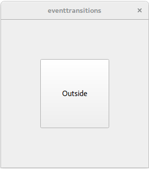

Event Transitions Example
The Event Transitions example shows how to use event transitions, a feature of The State Machine Framework.
The Event Transitions Example illustrates how states change when a user enters or leaves the area of a button. The states are handled by a QStateMachine object. The screen consists of a QVBoxLayout with a central button.
When the mouse is outside the button, the text in the button displays "Outside". When the mouse enters the button, it displays "Inside".

class Window : public QWidget { public: Window(QWidget *parent = 0) : QWidget(parent) { QPushButton *button = new QPushButton(this); button->setSizePolicy(QSizePolicy::Expanding, QSizePolicy::Expanding); QVBoxLayout *layout = new QVBoxLayout; layout->addWidget(button); layout->setContentsMargins(80, 80, 80, 80); setLayout(layout);
The Window class's constructors begins by creating a button. This button is added to layout, which is a QVBoxLayout object. Then two states are created: s1 is the state "Outside", and s2 is the state "Inside".
QStateMachine *machine = new QStateMachine(this);
QState *s1 = new QState();
s1->assignProperty(button, "text", "Outside");
QState *s2 = new QState();
s2->assignProperty(button, "text", "Inside");
State s1 is the state "Outside" and state s2 is state "Inside".
QEventTransition *enterTransition = new QEventTransition(button, QEvent::Enter);
enterTransition->setTargetState(s2);
s1->addTransition(enterTransition);
When the button receives an event of type QEvent::Enter and the state machine is in state s1, the machine will transition to state s2.
QEventTransition *leaveTransition = new QEventTransition(button, QEvent::Leave);
leaveTransition->setTargetState(s1);
s2->addTransition(leaveTransition);
When the button receives an event of type QEvent::Leave and the state machine is in state s2, the machine will transition back to state s1.
QState *s3 = new QState();
s3->assignProperty(button, "text", "Pressing...");
QEventTransition *pressTransition = new QEventTransition(button, QEvent::MouseButtonPress);
pressTransition->setTargetState(s3);
s2->addTransition(pressTransition);
QEventTransition *releaseTransition = new QEventTransition(button, QEvent::MouseButtonRelease);
releaseTransition->setTargetState(s2);
s3->addTransition(releaseTransition);
Next, state s3 is created. s3 will be entered when the button receives an event of type QEvent::MouseButtonPress and the state machine is in state s2. When the button receives an event of type QEvent::MouseButtonRelease and the state machine is in state s3, the machine will revert to state s2.
machine->addState(s1);
machine->addState(s2);
machine->addState(s3);
machine->setInitialState(s1);
machine->start();
}
};
Finally, the states are added to the machine as top-level states, the initial state is set to be s1 ("Outside"), and the machine is started.
int main(int argc, char **argv) { QApplication app(argc, argv); Window window; window.resize(300, 300); window.show(); return app.exec(); }
The main() function constructs a Window object that displays the QVBoxLayout object layout with its button.